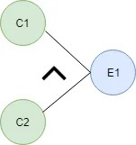
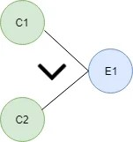
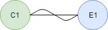
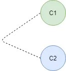

Y (AND) : E1 es un efecto y C1 y C2 son las causas. Si tanto C1 como C2 son verdaderos, entonces el efecto E1 será verdadero.
O (OR) : Si alguna de las causas de C1 y C2 es verdadera, entonces el efecto E1 será verdadero.
NO (NOT): si la causa C1 es falsa, el efecto E1 será verdadero.
Mutuamente excluyente: cuando solo una causa es verdadera.
Seguimos entonces los siguientes pasos para la construcción del grafo: Dividir la especificación en piezas que sean ‘trabajables’. No intentar crear un simple grafo para toda la especificación. Identificar Causas y Efectos: